Start here. One pretend shop, one problem, one dashboard.
A pretend UK shop chain sells more every year but doesn't make more profit. This project finds out why, and what the managers should do.
NorthStar Retail UK: 24 stores + website + app, selling clothes, shoes, electronics, beauty, home, toys, sports, accessories.
Not a real company. A Python program created the data so it behaves like a real shop. Always say this in interviews.
Managers get 4 reports that disagree (stores, website, finance, returns). Sales are up, but nobody knows where profit is lost.
Goal: one trusted set of numbers + a dashboard that answers what, why, where, what to do.
This is exactly what Data / BI Analysts do: messy data → clean → database → dashboard → decisions. It uses the tools UK adverts ask for: SQL, Power BI, DAX, Excel.
Read the zones in number order: 01 → 16. Use Go to in the toolbar to jump. Zoom in on any card to read it.
A chain. Each step takes the output of the step before it.
What: problem, stakeholders, KPI definitions (e.g. AOV = sales ÷ orders).
Why: every report must mean the same thing. Start with the question, not the chart.
What: 89,528 orders, 185,858 order lines, 12,500 customers, 1,220 products, 24 stores + online, 2 years.
Why: no real company data, so we simulate one with real patterns (Christmas, sales, online growth).
What: duplicates, "Web" vs "WEB", dates like 30 Feb, negative quantities, missing prices.
Why: real data is messy; cleaning is a key interview skill. Counting the mess means we can prove the cleaning works.
What: 40 rules, each logged with a row count. 90 bad sales rows set aside (0.05%).
Why: wrong data → wrong decisions. Result: 100% of cleaned lines match the answer key.
What: 8 tables with keys and rules (quantity 1–20, net = gross − discount). 13 automatic checks, all PASS.
Why: the database itself refuses bad data, and every tool reads one source.
What: from "sales by category" to "which loyal customers stopped buying".
Why: SQL is the #1 analyst interview skill. Each answer is saved and explained.
What: Executive, Sales, Profit, Customers, Returns; 52 DAX measures; filters on every page.
Why: managers click and filter themselves instead of waiting for reports.
What: 10 insights (Finding → Evidence → Cause → Impact → Action → Outcome), impact-vs-effort ranking, 10 slides.
Why: charts alone don't help managers. Decisions do.
Numbers in the middle (facts). Descriptions around them (dimensions). 1 = one, * = many.
FactSales: one product line in one order. Count orders with DISTINCTCOUNT(OrderID), never row count.
PK Primary key = unique ID. → Foreign key = points to a dimension. Surrogate key = simple number we create (fast, stable).
In-store shoppers with no loyalty card get CustomerKey −1. No sale is lost, and no "(Blank)" shows in slicers.
Return date = active link. Order date = inactive (dashed), switched on in DAX with USERELATIONSHIP.
Online orders ship from one hub with no region. Region = store region (in-store) or delivery region (online). One clear filter path, so no ambiguity.
Each description is stored once, Power BI is fastest with it, and it's simple: filter by dimensions, add up facts.
UML sequence diagram + the cleaning decision flow.
You don't need all 4,600 lines. These are the parts interviewers ask about. Full guide: CODE_GUIDE.md
1SELECT p.category, 2 ROUND(SUM(s.net_sales), 0) AS revenue, 3 ROUND(100 * SUM(s.net_sales) / SUM(SUM(s.net_sales)) OVER (), 1) AS revenue_share_pct, ROUND(SUM(s.gross_profit), 0) AS gross_profit, 4 ROUND(100 * SUM(s.gross_profit) / SUM(s.net_sales), 1) AS margin_pct 5FROM fact_sales s 6JOIN dim_product p ON p.product_key = s.product_key 7GROUP BY p.category 8ORDER BY revenue DESC;
SUM adds up sales for each category pile.SUM(SUM()) OVER () = grand total on every row (window function), so each category ÷ total = its share.s is a nickname.Result: Electronics = 19.3% of sales but 5.9% of profit (13% margin).
The database runs it in this order: FROM → JOIN → GROUP BY → SELECT → ORDER BY
1WITH m AS ( SELECT d.year, d.month_number, d.month_short, SUM(s.net_sales) AS revenue FROM fact_sales s JOIN dim_date d ON d.date_key = s.date_key GROUP BY d.year, d.month_number, d.month_short ), 2w AS ( SELECT *, LAG(revenue, 12) OVER (ORDER BY year, month_number) AS revenue_ly FROM m ) 3SELECT month_short, revenue_ly AS revenue_2024, revenue AS revenue_2025, ROUND(100 * (revenue / revenue_ly - 1), 1) AS revenue_yoy_pct FROM w 4WHERE year = 2025;
WITH m AS): a named temporary table holding one row per month with its sales.LAG(revenue, 12) looks 12 rows back, which is the same month last year. That's a window function.Result: sales grew every month, but profit fell in January (−11%) and July (−4%), the sale months.
1Revenue = SUM ( FactSales[NetSales] ) 2Gross Profit = [Revenue] - [Cost] 3Gross Margin % = DIVIDE ( [Gross Profit], [Revenue] ) 4Orders = DISTINCTCOUNT ( FactSales[OrderID] ) 5Customers = CALCULATE ( DISTINCTCOUNT ( FactSales[CustomerKey] ), DimCustomer[IsGuest] = "N" ) 6Revenue PY = CALCULATE ( [Revenue], SAMEPERIODLASTYEAR ( DimDate[Date] ) ) 7Revenue YoY % = DIVIDE ( [Revenue] - [Revenue PY], [Revenue PY] )
DIVIDE = safe division (blank instead of an error when sales are 0).CALCULATE = "calculate, but change the filter": leave out anonymous Guest shoppers.Filter context: written once, but Power BI calculates it separately for every bar, card and slicer choice.
1s = s.drop_duplicates() 2CHANNEL_MAP = {"web": "Website", "website": "Website", "app": "Mobile App", "instore": "In-Store", "c&c": "Click & Collect", ...} s["Channel"] = s["Channel"].str.lower().map(CHANNEL_MAP) 3assert s["Channel"].notna().all() 4s = quarantine(s, s["Quantity"] <= 0, "sales_transactions", "SA-06", "Negative quantity") 5fix = s["DiscountPct"] > 1 s.loc[fix, "DiscountPct"] = s.loc[fix, "DiscountPct"] / 100 6record("SA-09", "sales_transactions", "Discount entered as whole number", fix.sum())
assert stops the program if any spelling wasn't mapped. Nothing slips through silently.Pattern: the 683-line file is this small pattern repeated for each table, plus building the star schema.
1CREATE TABLE fact_sales ( sales_line_key INTEGER PRIMARY KEY, 2 product_key INTEGER NOT NULL REFERENCES dim_product(product_key), 3 quantity SMALLINT NOT NULL CHECK (quantity BETWEEN 1 AND 20), discount_pct NUMERIC(5,4) CHECK (discount_pct BETWEEN 0 AND 0.6), net_sales NUMERIC(12,2) NOT NULL, 4 UNIQUE (order_id, order_line_number), 5 CHECK (net_sales = gross_sales - discount_amount) );
Real story: these rules caught 3 bugs while building, including sales dated before a product's launch.
5 Power BI pages, one per audience. Filters at the top work on every page. (Images are layout mockups; the real Power BI pages match this layout.)
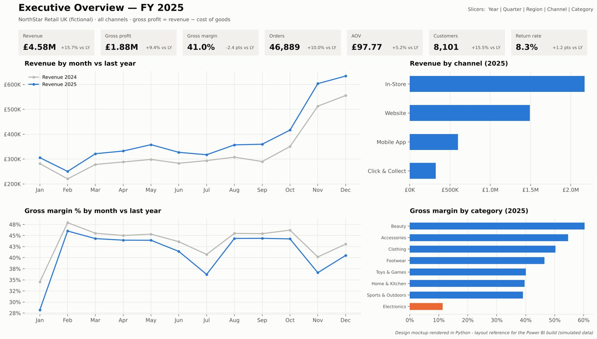
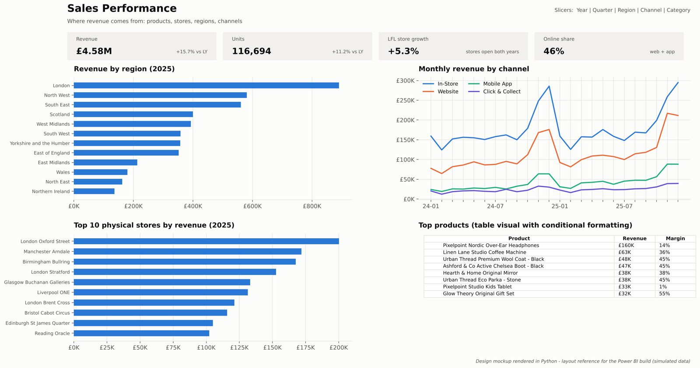
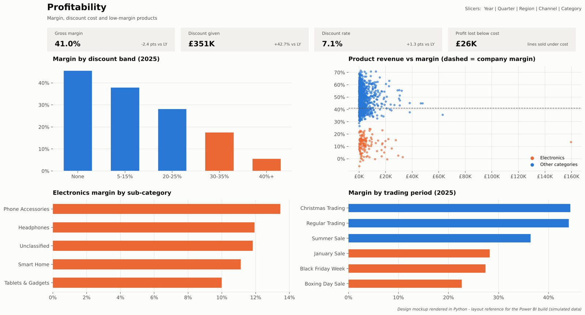
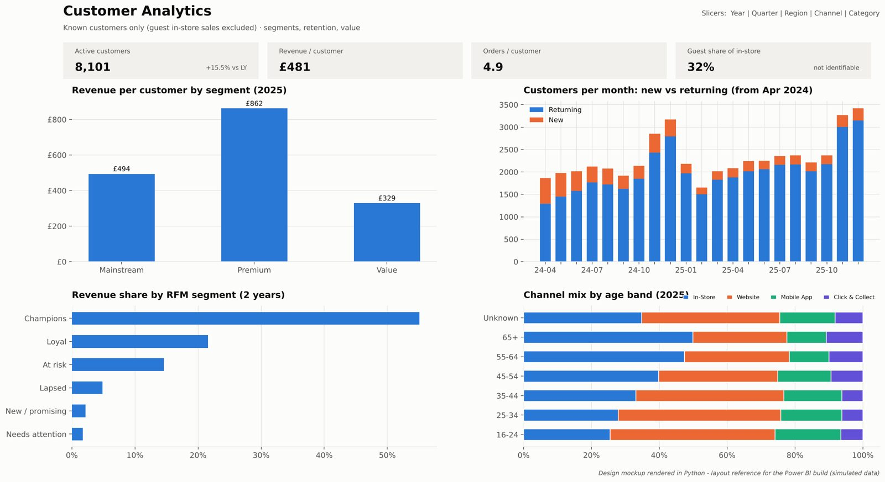
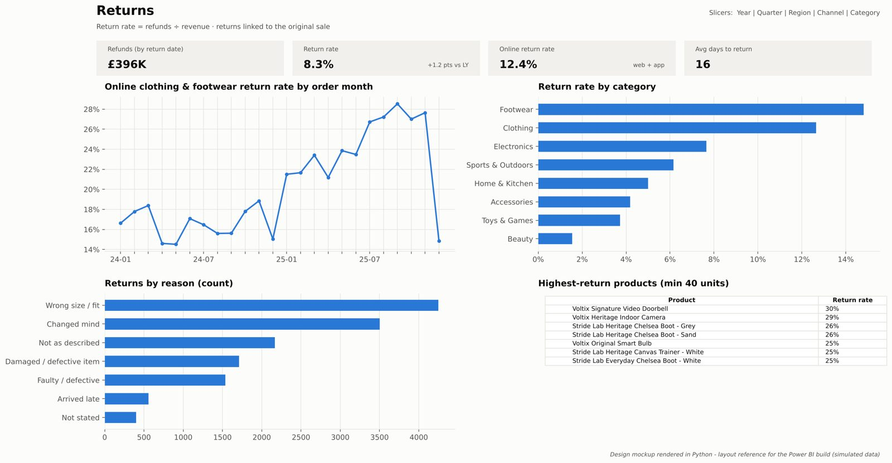
Every chart comes from a SQL query (Qxx). Read: what it shows → so what.
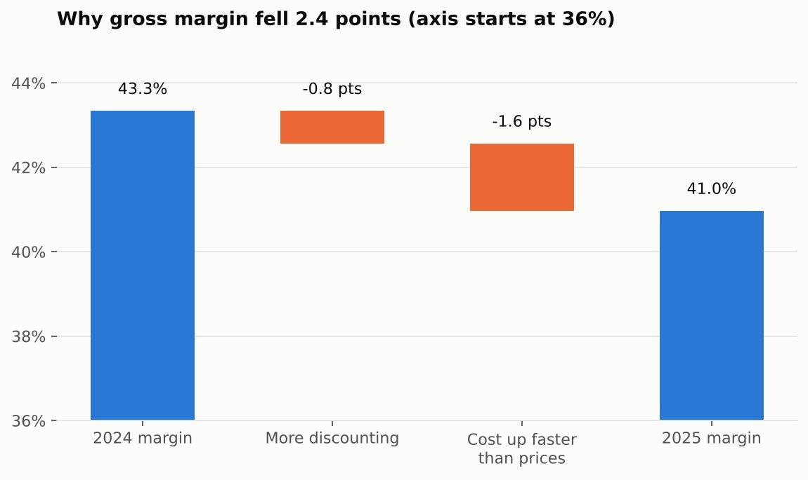
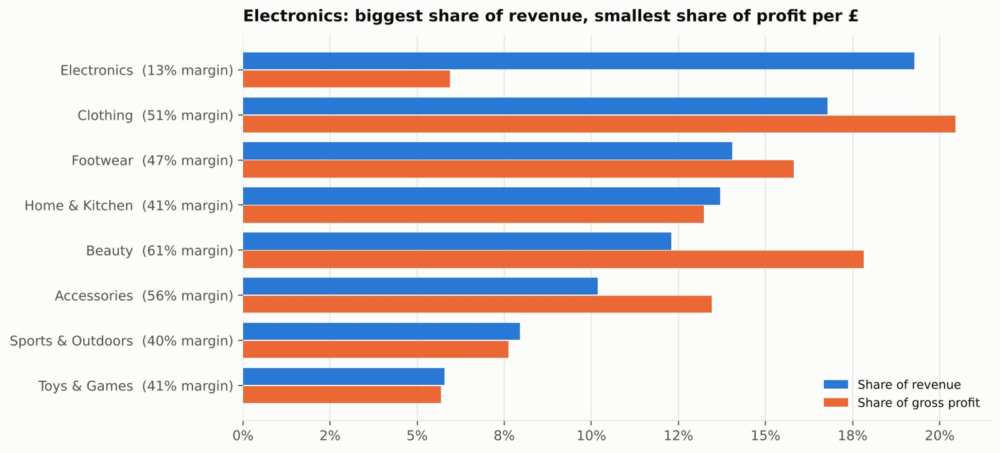
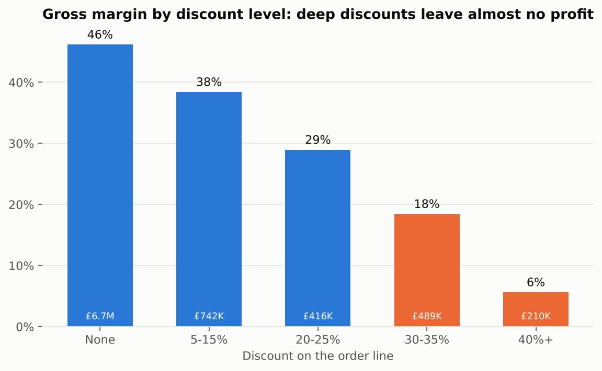
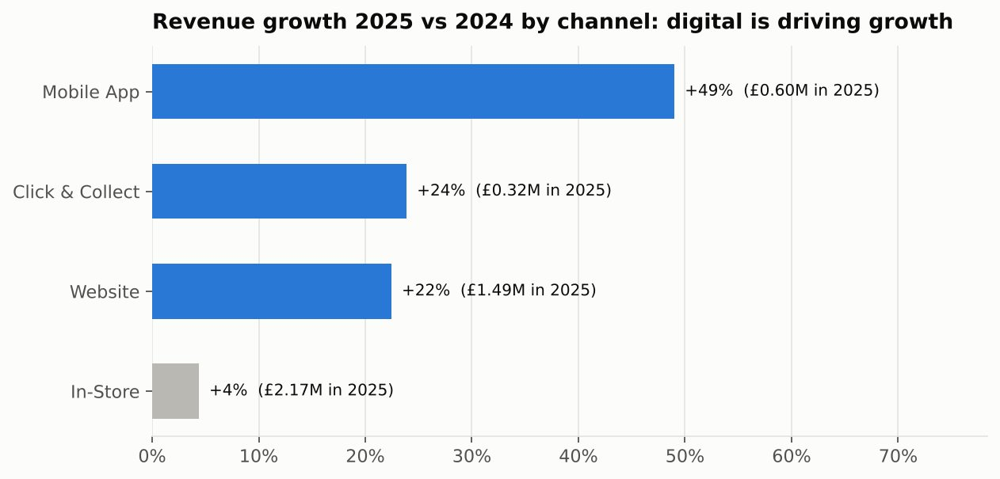
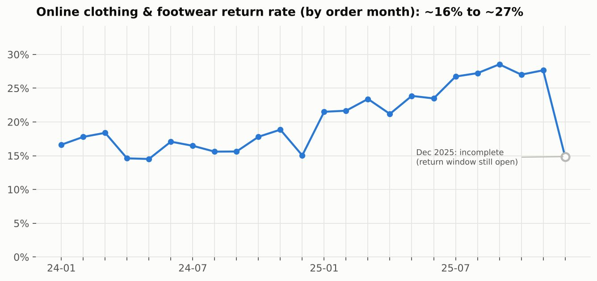
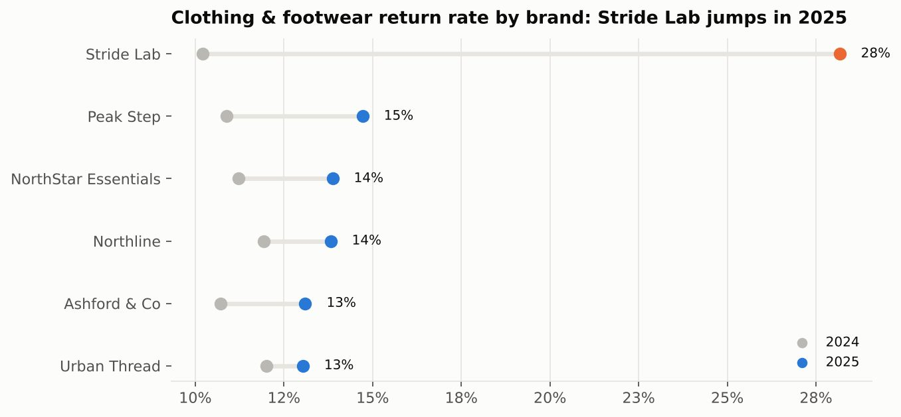
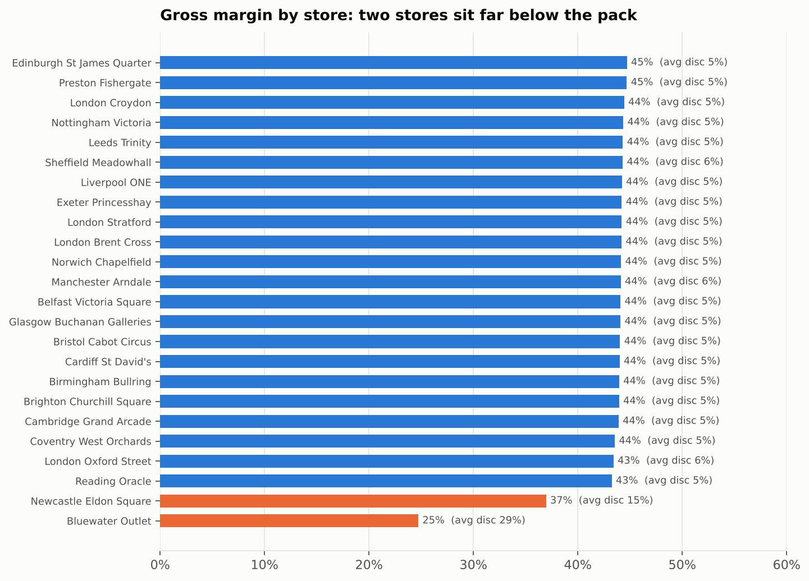
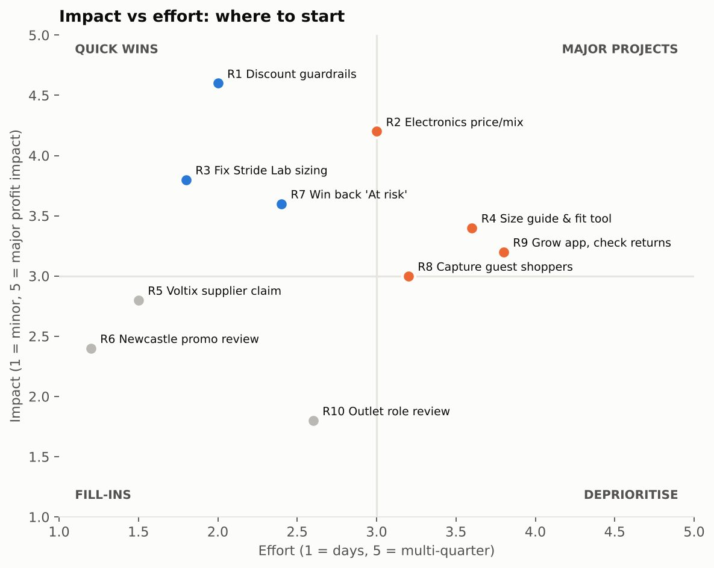
The whole story in about 8 minutes. presentation/NorthStar_Executive_Presentation.pptx
Use these to show you really understand how the parts connect.
The CHANNEL_MAP has no match → assert stops the cleaning script with the unknown value shown. Add it to the map, re-run. Nothing wrong reaches the dashboard.
Rule SA-01 removes exact duplicates, and the database's UNIQUE(order, line) rule refuses any that slip through. Revenue never doubles.
Power BI shows "Could not find a part of the path". Fix: Transform data → Edit parameters → DataFolder = the new path ending with \ → Apply changes.
Drop the new extracts in data/raw → run 03_clean_data.py → reload SQL → Refresh in Power BI. Same rules every time, which is why it's scripted, not done by hand.
Every visual filters to that region. Margin drops to 38.6%, and the store chart shows why: Newcastle Eldon Square's heavy discounting.
2025 lines at ≥20% off made −£24.7K profit. At 15% off, losing 30% of those sales → about +£28K profit a year (illustrative, assumptions stated).
It isn't. Those orders haven't had time to come back (return lag). Never judge the latest month's returns at face value.
Not quite. Like-for-like stores grew only +5.3%; the new Sheffield store and online growth flatter the headline.
| Tool | Used for | Why |
|---|---|---|
| Python pandas, numpy | Create, break and clean the data; build charts, Excel, slides | Repeatable: same result every run |
| PostgreSQL | The database | Free and professional, enforces rules |
| SQL | 40 business questions | #1 analyst skill |
| Excel | Quick checks: XLOOKUP, SUMIFS, pivots | Every business uses it |
| Power Query | Same cleaning rules inside Power BI | Refresh without Python |
| Power BI + DAX | Interactive dashboard, 52 measures | Top BI tool in UK adverts |
| Git + GitHub | Store and share the project | Recruiters look here |
| VS Code | Read the code with colours | Free, easy |
Colour = how important it is for interviews.
uk-retail-sales-bi-dashboard/ ├─ PROJECT_GUIDE.html start here (open in browser) ├─ CODE_GUIDE.md how to read the code ├─ business-analysis/ the problem & KPIs ├─ scripts/ │ ├─ 01_generate_data.py ● know what it does │ ├─ 02_inject_quality…py ● know what it does │ ├─ 03_clean_data.py ●● explain the rules │ └─ helpers/ ○ builds output files ├─ sql/ │ ├─ 01_create_schema.sql ●●● must explain │ ├─ 02_load_data.sql │ ├─ 03_data_quality_checks.sql │ ├─ 04_business_questions.sql ●●● must explain │ └─ README.md every answer explained ├─ dax/measures.dax ●●● must explain ├─ power-query/ M cleaning code ├─ powerbi/ …Dashboard.pbip (open this) ├─ excel/ presentation/ screenshots/ ├─ insights/ findings + actions ├─ documentation/ data dictionary, rules ├─ notes/ study notes + 50 questions └─ portfolio/ CV lines, LinkedIn post
GitHub website: click any folder, then any file. VS Code: File → Open Folder. Press Ctrl+K then Ctrl+0 to fold a long file to its headings; Ctrl+G jumps to a line number.
4 levels. Level 1 and 2 are enough to see everything working.
C:\NorthStar\.data, extract clean_data.zip here.powerbi\NorthStar_Retail_Dashboard.pbip.…\data\clean\ path.northstar.sql\01_create_schema.sql.data\clean, Header on. Dimensions first, then fact_sales, then fact_returns.03 (all PASS) then 04.pip install pandas numpy matplotlib openpyxl python-pptxpython scripts\01_generate_data.py, then 02, then 03.python scripts\helpers\build_….py to rebuild the outputs.If Power BI says "Could not find a part of the path", search File Explorer for fact_sales.csv → right-click → Open file location → copy the address bar. On your laptop it was D:\Northstar\uk-retail-sales-bi-dashboard\data\clean\. No quotation marks, and keep the \ at the end.
Send the project ZIP (~21 MB) by Google Drive, WeTransfer or USB stick. He follows Level 1.
Share this whiteboard and the guide page from the Share menu. They're private until you do. A copy of the guide is also in the project: PROJECT_GUIDE.html.
Three versions, depending on who is listening.
"I built a system for a pretend shop chain that sells more every year but doesn't make more money. It fixes the mistakes in their data and shows on one screen where money is made and lost: too many discounts, electronics barely profitable, and one shoe brand sent back because of wrong sizes."
"I built an end-to-end retail analytics project for a simulated UK retailer: generated two years of realistic data, cleaned it with 40 documented rules, built a star schema in PostgreSQL, answered 40 business questions in SQL, and built a 5-page Power BI dashboard with DAX. Revenue grew 15.7% but profit only 9.4% because of discounting and weak Electronics margins, and I turned that into prioritised recommendations."
| Situation | Simulated UK retailer, four reports that disagree; sales up but nobody knows where profit is lost. |
| Task | Build one trusted source of numbers; explain what, why, where, and what to do. |
| Action | Defined KPIs first → realistic data with real-world mess → 40 cleaning rules (fix / flag / quarantine) → star schema with database rules → 40 SQL analyses → Power BI with 52 DAX measures → reconciled SQL, Excel and Power BI totals. |
| Result | Margin −2.4 pts (1.6 costs, 0.8 discounts); Electronics loses money above ~19% discount; one shoe supplier tripled returns. Recommended discount limits, supplier action and a win-back campaign, ranked by impact vs effort. |
"It's a simulated project with synthetic data, so it shows my skills, not work experience, and the money figures are estimates with stated assumptions." Never claim a real company or real savings.
Practise out loud in your own words. 50 more in notes/14_interview_question_bank.md
No. A simulated UK retailer with synthetic data I generated, with realistic patterns. The methods are what I'd use on real data.
Descriptions stored once, simple for users, fastest in Power BI: filter by dimensions, add up facts.
One row per order line. Orders = DISTINCTCOUNT(OrderID), not a row count.
WHERE filters rows before grouping; HAVING filters groups after totals are calculated.
SQL: monthly CTE + LAG(revenue, 12). DAX: CALCULATE([Revenue], SAMEPERIODLASTYEAR(DimDate[Date])), then DIVIDE.
Calculates a measure with changed filters, e.g. Customers without the anonymous Guests.
14 spellings of 4 channels, two date formats, a double-loaded batch. Mapping table, explicit date formats, de-duplication: validity 92% → 100%, only 0.05% set aside.
No. Blank = no loyalty card in store, which is legitimate, worth £1.36M. Kept as a Guest member.
One reconciliation total (£8,545,888) every tool must match, 13 automatic database checks, and SQL vs Excel vs Power BI compared.
Profit grew far slower than sales. I split the 2.4-point margin fall into cost inflation (1.6) and discounting (0.8).
Electronics breaks even at ~19% off, so 30% loses money on every unit. Use category limits and test in a few regions.
"As a mentor and coding assistant. I ran everything, checked every number, and can explain any part. Pick a query and I'll walk you through it."
screenshots/.notes/00_START_HERE.md.powerbi/00_SIMPLE_STEPS.md, Way 2).portfolio/.